从双视角指标评价体系 → MDM有解性证明 → 最优偏移量选取 → 神经网络端到端学习
威布尔分析平台 · 可靠性工程研究 · 2025.06
文献统计 → 指标定义 → 为什么没有统一有效指标 → J_param → 工程视角 → 三方法蒙特卡洛比较 → 总结
对 182 文件夹 68 篇文献逐篇统计精度指标使用频次。不自创指标，先搞清楚文献主流用什么。
| 排名 | 精度指标 | 频次 | 占比 |
|---|---|---|---|
| 1 | Bias | 51 | 75% |
| 2 | SD / 方差 | 38 | 56% |
| 3 | MSE / RMSE | 27 | 40% |
| 4 | 相对误差 | 11 | 16% |
| 5 | MAE | 2 | 3% |
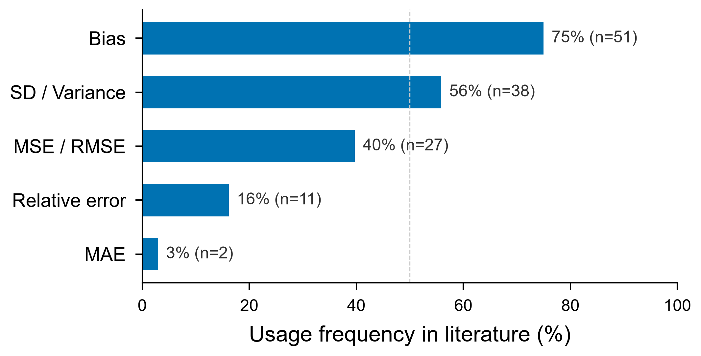
| 指标 | 公式 | 看的是什么 | 量纲 |
|---|---|---|---|
| Bias | E[θ̂] − θ | 系统性偏移 | 同参数 |
| SD | √E[(θ̂−E[θ̂])²] | 散布 | 同参数 |
| MSE | E[(θ̂−θ)²] = Bias²+SD² | 综合 | 同参数² |
| RMSE | √MSE | 综合（与SD同量纲） | 同参数 |
| 相对误差 | (θ̂−θ)/θ | 无量纲偏差 | 无量纲 |
| MAE | E[|θ̂−θ|] | 平均绝对偏离 | 同参数 |
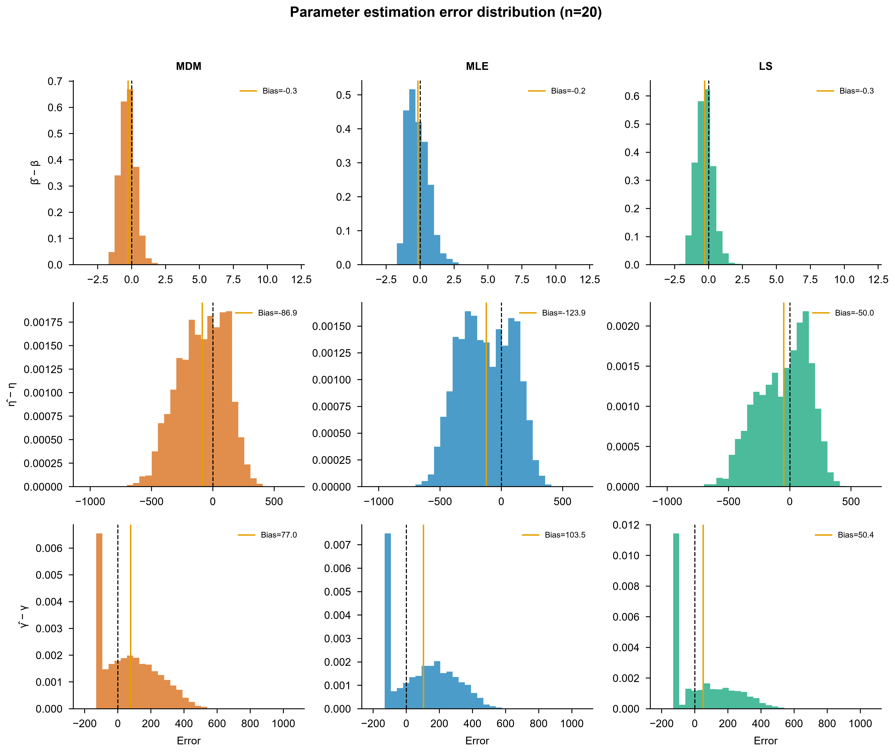
结论：Bias+SD 是最小充分集。MSE/RMSE 是合成指标。γ̂ 的双峰分布意味着必须附图阅读——任何单一数字都不足以概括。
单指标在特定分布形态下会失真。必须成套报告 Bias+SD+RMSE，γ 禁用相对指标。
相同RMSE可掩盖完全不同的偏差-方差结构。必须分解报告Bias和SD。
P99.9与中位数比达5.4×，最大误差差6.7×。仅报Mean/Median严重低估极端风险。
γ=2时RelRMSE达8800%。同一估计器精度没变，因真值不同相对指标任意放大。
n=20：参数视角MDM最优（RMSE_β=0.609），工程视角LSE追平MDM（RMSE_x₀.₉₅≈97.8）。两视角分离。
γ的MSE是β的84000倍——纯量纲差异。跨参数比较必须用相对指标或标准化。
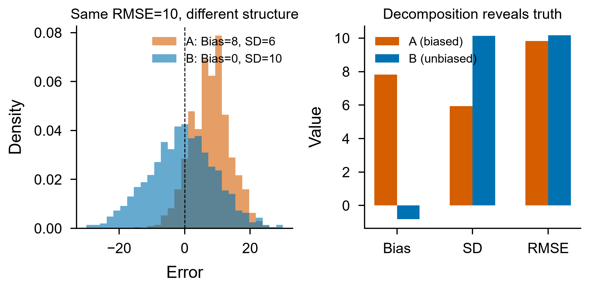
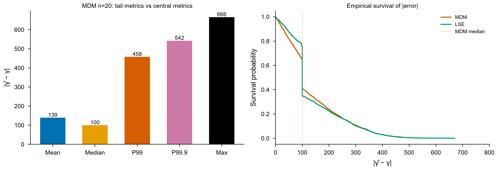
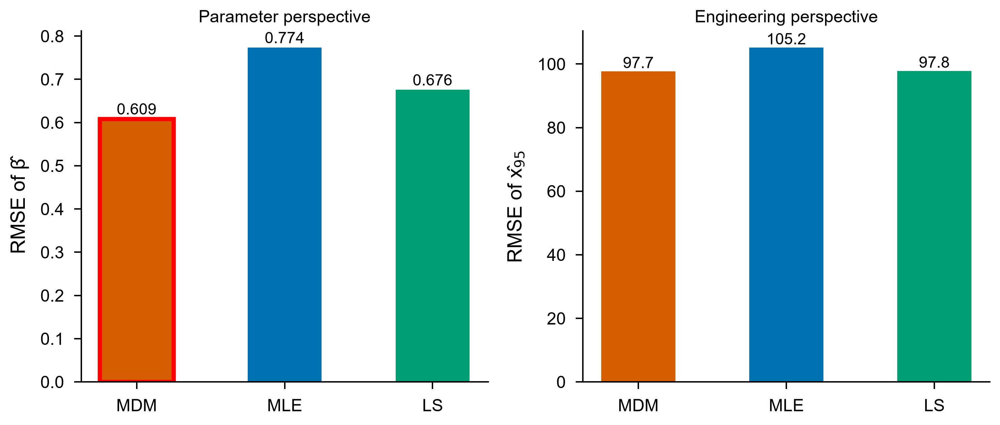
| 参数 | Bias | SD | RMSE | 相对Bias | 相对RMSE | 其他 |
|---|---|---|---|---|---|---|
| β̂ | ✓ | ✓ | ✓ | ✓ | ✓ | |
| η̂ | ✓ | ✓ | ✓ | ✓ | ✓ | |
| γ̂ | ✓ | ✓ | ✓ | 禁用 | 禁用 | 附报γ̂=0截断率+γ̂近零率 |
β、η除以自身真值转为无量纲；γ不除以γ自身而除以η，避免γ≈0失真。几何含义：三维标准化误差空间中的平均欧氏距离。
Bias和SD构成参数视角最小充分集。若为δ方案排序或神经网络训练需要标量目标，则J_param把三参数误差统一到可比较空间。
多指标聚焦单个参数诊断，J_param聚焦整体效果排序。后续03-04：参数视角目标用J_param；多指标保留用于诊断。
可靠性工程真正关心的是指定可靠度下的寿命分位点预测是否准确，而非参数本身。
对目标R，报告Bias_xR、SD_xR、RMSE_xR。如果只能选一个工程排序指标，就用RMSE_xR。
| 方法 | RelRMSE_β | RelRMSE_x₀.₉₅ |
|---|---|---|
| MDM | 24.4% | 24.1% |
| LSE | 27.0% | 24.2% |
| MLE | 31.0% | 26.0% |
MDM的参数优势在工程视角被LSE追平——参数准≠寿命准（非线性传递+补偿结构）。两视角必须分开报告。
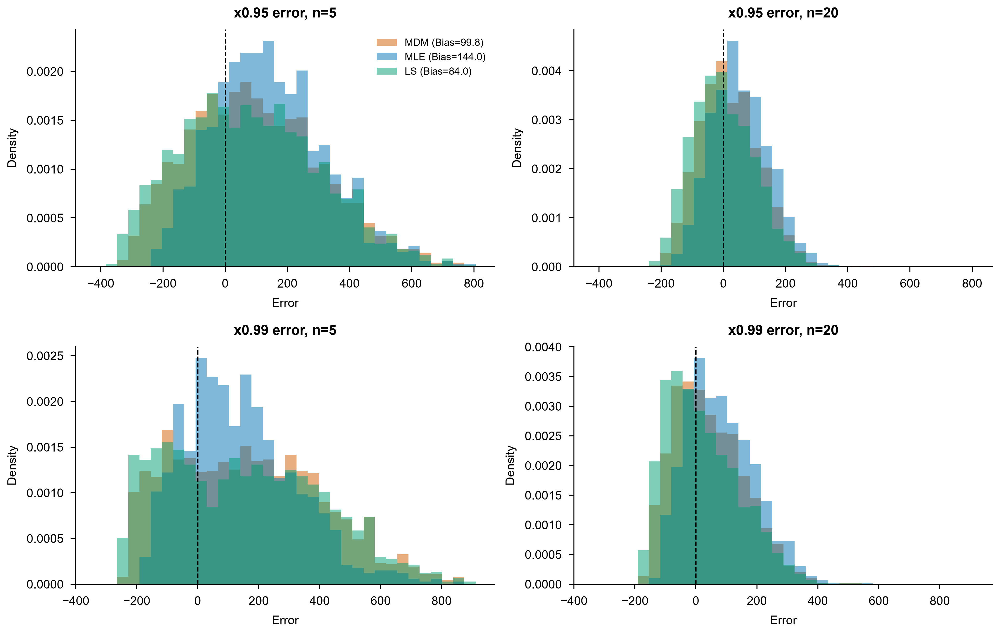
β=2.5, η=1000, γ=100；n∈{5,7,10,15,20,50}；每组2000次重复；MDM/MLE/LSE配对估计
| n | MDM | MLE | LSE |
|---|---|---|---|
| 5 | 0.4% | 54.4% | 0.0% |
| 7 | 0.1% | 46.2% | 0.0% |
| 10 | 0.0% | 28.9% | 0.0% |
| 20 | 0.0% | 4.3% | 0.0% |
| 50 | 0.0% | 0.0% | 0.0% |
失败率表。MLE小样本灾难性失效。
| n | 方法 | RMSE_β | RMSE_η | RMSE_γ |
|---|---|---|---|---|
| 20 | MDM | 0.609 | 212.4 | 176.0 |
| 20 | MLE | 0.774 | 247.1 | 203.3 |
| 20 | LSE | 0.676 | 215.8 | 175.0 |
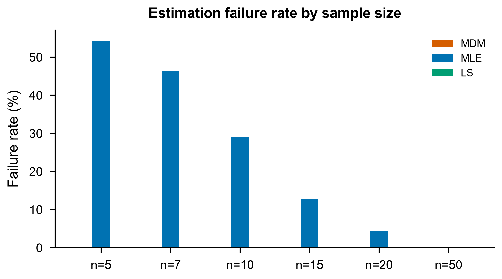
常规报告 Bias、SD、RMSE；需要一个排序/训练目标时用 Jparam。Bias/SD/RMSE保留用于诊断，J_param负责排序。
先选目标可靠度R，再报告 x_R 的 Bias、SD、RMSE；需要一个工程排序指标时用 RMSE_xR。
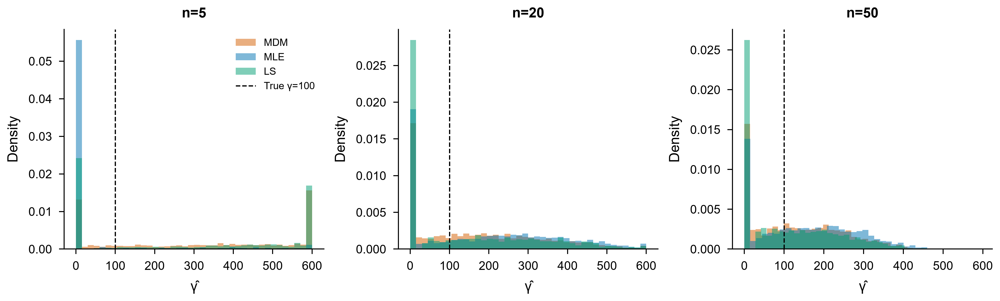
无解现象 → 理论存在性 → 两类成因 → 工程方案（截断+拟合） → 精度验证
按原文实现MDM（偏置求根判据 δ=0.1），在多个配置上做蒙特卡洛检验，发现无解现象。
开口向上的二次函数。包络梯度 g(γ) = (γCvv − Cuv) / S(γ) 单调上升。
存在性判据：sv > offset 且无约束根 ∈ [0, t₍₁₎) ⟹ 合法根存在且唯一。
理论预测合法根几乎总存在 → 实际无解必定来自：
① 根落在 γ<0 被截断（非法根）
② 根贴近 t₍₁₎ 被网格漏检（数值问题）
无约束根落在γ<0处，被物理约束γ≥0切掉。差异函数本身有良好定义的偏置根，只是不合法。γ₀/η越大有解率越高——真值离0越远，根越不容易落入负区。
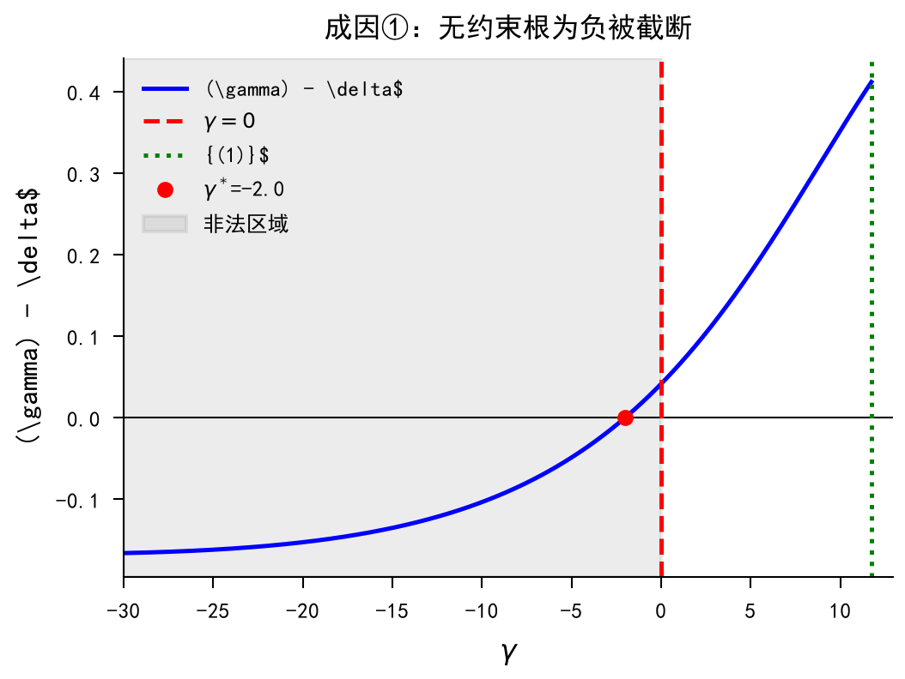
根紧贴 t₍₁₎，均匀网格看不到。n越大时 t₍₁₎ 越贴近0，漏检更严重。均匀搜索的数值分辨率不足。
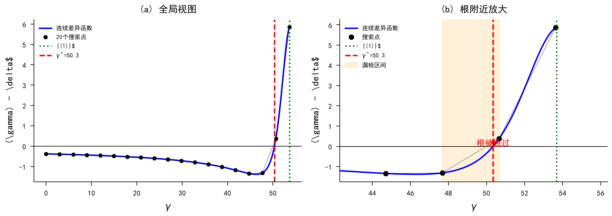
直接截断到γ̂=0（物理约束，最稳）。成因①截断策略在E01-6中已验证（MDM γ̂=0截断率~20%，误差可控）。
不依赖密集网格，改用拟合（解析梯度）直接推算根的位置。避免均匀网格在t₁附近的数值分辨率不足。
| Step | 操作 | 针对 |
|---|---|---|
| 1 | 检测无解样本，分类成因①/② | 识别 |
| 2 | 成因①：γ̂=0截断（物理约束） | 下界切除 |
| 3 | 成因②：解析梯度直接推算根 | 网格漏检 |
| → | failure_rate → 0%，始终有解 | 100%可用 |
对照组（标准网格搜索，20点）vs 实验组（截断+拟合，100%给出估计）。三层次对比。
| 层次 | 对比内容 | 预期 |
|---|---|---|
| 1 | 可用性提升：failure_rate | X% → 0% |
| 2 | valid-only子集精度：J_param | ≈一致 |
| 3 | 全样本精度：全量 vs valid-only | 无退化 |
报告指标：valid_rate / failure_rate、J_param、RMSE_β/η/γ、RMSE_x₀.₉₅/x₀.₉₉、γ̂=0截断率与near-zero率。
实验配置：β=2.5, η=1000, γ=100；n∈{5,7,10,20}；2000次/组；δ=0.1固定。对照组（标准网格，valid-only）vs 实验组（截断+拟合，100%有解）。
研究目标 → δ扫描与影响因素 → Oracle阶梯 → 可部署方案 → 03→04交接
| 层级 | 信息 | 可部署性 |
|---|---|---|
| L0 | 全局固定（不区分任何条件） | ✓ Default |
| L1 | 按样本量 n | ✓ 可部署 |
| L2 | 按形状参数 β（真值） | Oracle |
| L3 | 按 β × n（真值） | Oracle |
| L4 | 按 β × n × γ/η（真值） | Oracle |
| L5 | 逐样本事后最优 | 事后上界 |
单样本平方损失 loss_i(δ) → 层级聚合。后续任何δ扫描、oracle、部署策略或神经网络标签都追溯同一套统计口径。主排序指标：J_param（参数视角），工程指标RMSE_xR为补充诊断。
β是主驱动，n次之，γ/η影响弱。逐样本异质性显著。
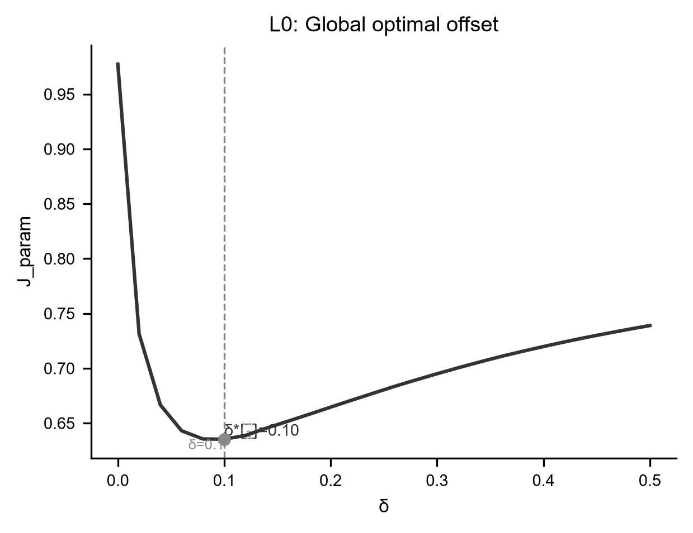
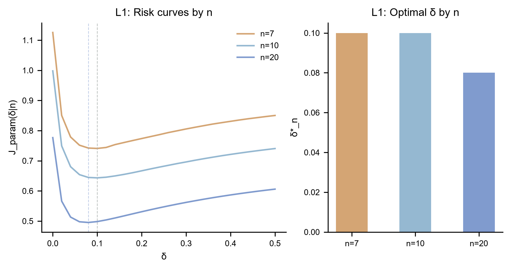
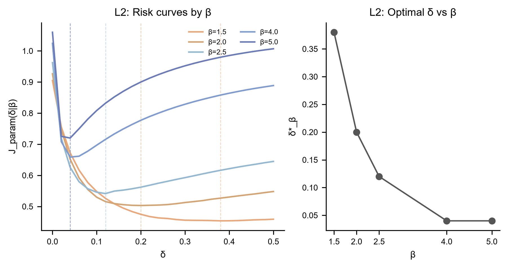
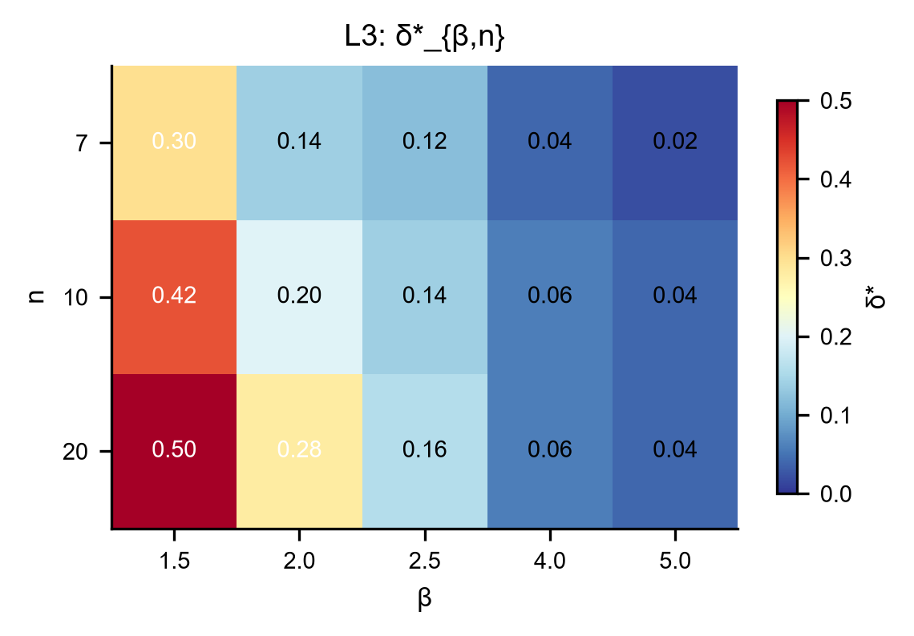
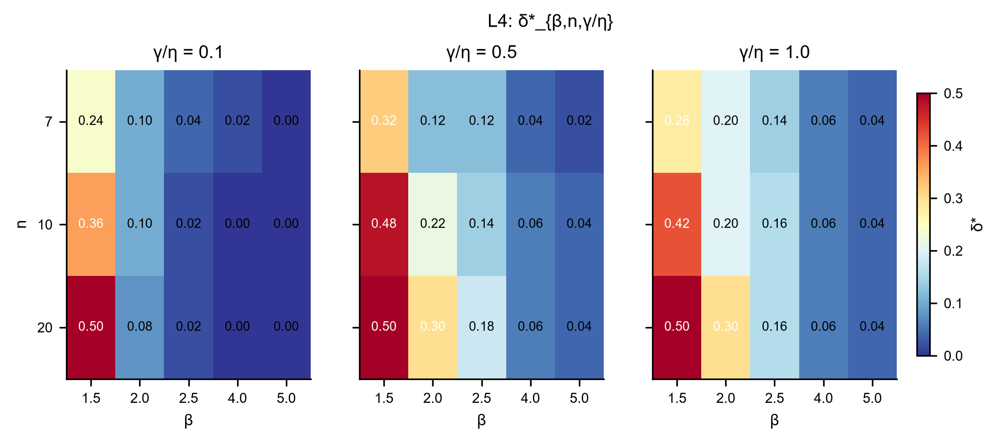
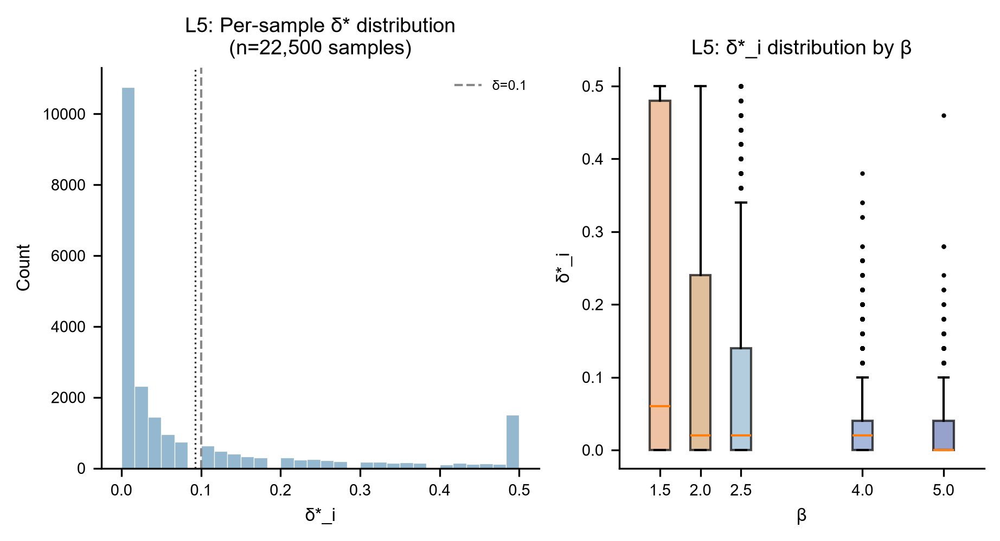
知道越多信息，风险上界下降越多。L2~L4为真值Oracle，L5为事后上界。
| 层级 | δ使用方式 | 可部署性 | Jparam | vs Default | 边际增益 |
|---|---|---|---|---|---|
| Default | δ=0.1 全局固定 | ✓ 基线 | 0.6353 | — | — |
| L1 | 按样本量 n | ✓ 可部署 | 0.5988 | -5.7% | +5.7% |
| L2 | 按形状参数 β | Oracle | 0.5891 | -7.3% | +1.6% |
| L3 | 按 β × n | Oracle | 0.5701 | -10.3% | +3.2% |
| L4 | 按 β×n×γ/η | Oracle | 0.5701 | -10.3% | ≈0 |
| L5 | 逐样本事后最优 | 事后上界 | 0.4941 | -22.2% | +12.0% |
δ=0.1 → MDM估β̂ → 查δ*(β̂,n) → 迭代收敛。
不稳定：部分配置不收敛，无法全空间超越Default。
L矩/WMLE/双δ/MDM0等方法估β̂ → 查δ*(β̂,n) → MDM拟合。
不稳健：L矩有失败率，所有外部β法无法稳定超越Default 0.6353。
多维样本统计特征 vs 单统计量τ₃，信息利用率有质的差别。神经网络从可观测特征端到端学习δ策略。
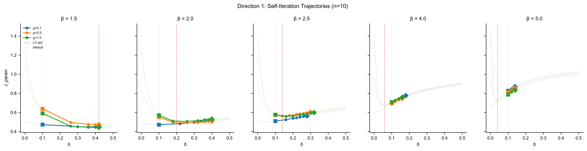
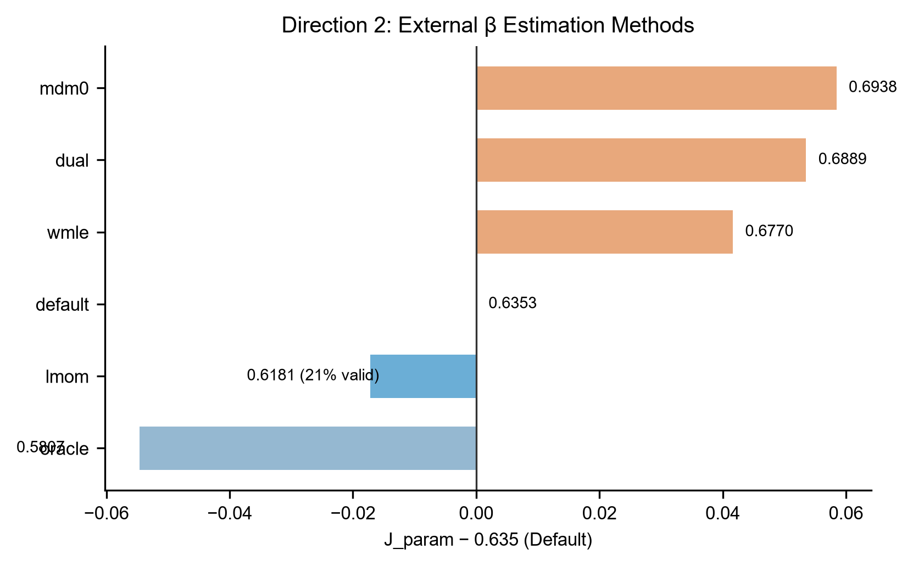
路线1（L4）：22,500样本 → 45个δ*标签（配置级最优）
路线2（L5）：22,500样本 → 22,500个δ*_i标签（逐样本最优）
样本次序统计量、间距比、偏度、变异系数CV、t₁/median、tₙ/median、log(tₙ/t₁)、n。全部z-score标准化。
| 方案 | Jparam | 目标 |
|---|---|---|
| Default基线 | 0.6353 | — |
| 路线1目标 | ≤ 0.5701 | 逼近L4 Oracle |
| 路线2目标 | ≤ 0.4941 | 逼近L5 Oracle |
实验契约 → 特征+架构 → 主结果 → 泛化 → 消融 → 最终方案
45个配置级最优δ标签
22,500个逐样本最优δ标签
每样本26维loss_i(δ)曲线
次序统计量、间距比、偏度、CV、t₁/tₙ/n。真值禁止作为输入。
同配置内rep 7:3随机划分（同分布检查），blocked split用于泛化。
MSE（回归δ*）、交叉熵（分类）、KL/JS（风险曲线）、或直接优化J_param。
全部 z-score 标准化。真 β/η/γ 禁止作为输入。
输入（特征维度）→ 256 → 128 → 64 → 输出（1或26）
ReLU + Dropout(0.2) + BatchNorm。AdamW，lr=1e-3，weight decay=1e-4，cosine annealing，early stopping（200 epochs），batch size 256。
回归δ*_{β,n,γ/η}（45个值），MSE损失。
回归δ*_i（22,500个值），逐样本最优标签，MSE损失。
26维soft label，KL散度或MSE损失。直接从风险曲线学习δ选择策略。
同配置内 rep 7:3 划分，对比三条路线 vs Default / L4 / L5 oracle
| 方案 | Jparam | vs Default (0.6337) |
|---|---|---|
| Default (δ=0.1) | 0.6337 | — |
| L4 Hard | 0.5891 | -7.0% |
| L5 Hard | 0.5434 | -14.2% |
| Risk Curve | 0.5332 | -15.9% 🏆 |
| L4 Oracle（参考） | 0.5701 | -10.0% |
| L5 Oracle（参考） | 0.4941 | -22.0% |
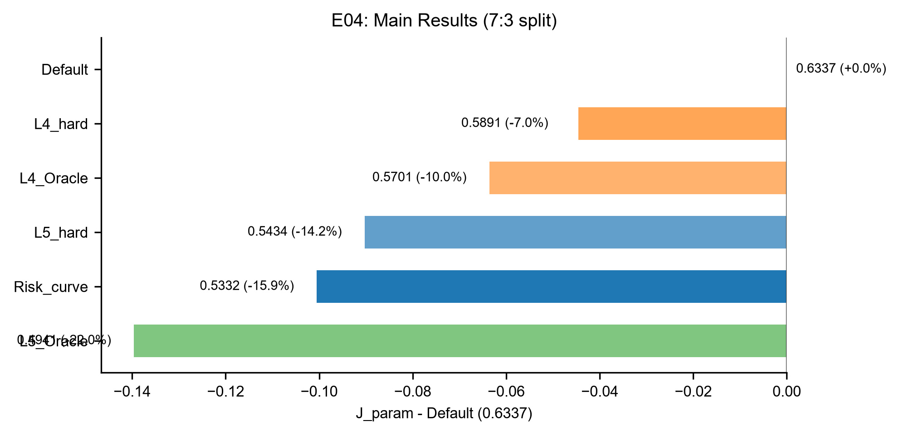
| 泛化任务 | Risk J | vs Default | gap |
|---|---|---|---|
| 跨 β | 0.5389 | -12.9% | +0.006 |
| 跨 n | 0.5474 | -14.9% | +0.014 |
| 跨 γ/η | 0.6392 | -0.9% | +0.106 |
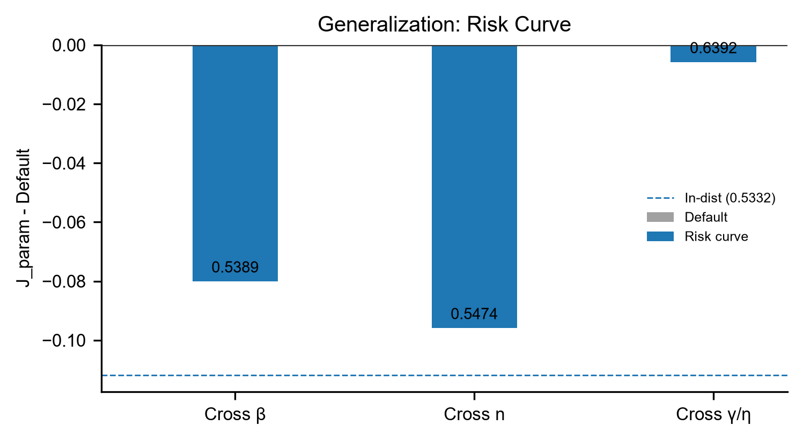
Risk > L5 > L4：Risk曲线标签性能最优。L5比Risk差+1.6pp，L4比Risk差+10.5pp。
尾部特征贡献最大（+0.023），其次形态特征（+0.008），n的贡献最小（+0.006）。
所有变体差距 < 0.005，架构不敏感。256→128→64 足以。
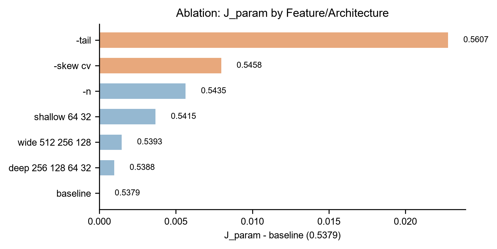
vs Default 0.6337: -15.9%。跨β泛化稳定（gap +0.006）。全样本有效，无需真值特征。
| 方案阶梯 | Jparam | vs Default |
|---|---|---|
| Default δ=0.1 | 0.6337 | — |
| L4 Hard (NN) | 0.5891 | -7.0% |
| L5 Hard (NN) | 0.5434 | -14.2% |
| Risk Curve (NN) | 0.5332 | -15.9% |
| L5 Oracle (上界) | 0.4941 | -22.2% |
01 · 参数+工程双视角：J_param用于排序，RMSE_xR用于决策。两视角必须分离。
02 · MDM始终有解：截断+拟合方案使failure_rate→0%，精度无退化。
03 · Oracle阶梯明确上界：L4 Oracle J=0.5701，L5 Oracle J=0.4941。神经网络逼近上界。
04 · 推荐替代Default：NN Risk Curve J=0.5332（-15.9%），全样本有效，跨β泛化稳定。